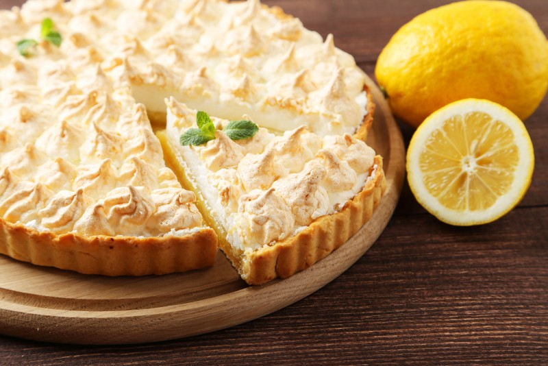

Lemon Pies

Ingredients
200g of cornstarch biscuit
150 of margarine
1 can of condensed milk
1 box of sour cream
juice of 4 lemons
zest of 2 lemons
3 or 4 egg whites
3 tablespoons of sugar
zest of 2 lemons to decorate
Steps
- Grind the cornstarch biscuit in a blender or food processor.
- Add the margarine and mix some more.
- Pour the dough into a form with a removable background (27 cm in diameter).
- With your hands, spread the crushed cookies on the bottom and sides of the form, covering the entire area evenly.
- Bake in a preheated oven (180°C) for approximately 10 minutes.
- Blend all ingredients in a blender (except lemon zest) until smooth and firm.
- Fill the already baked dough and take it to the fridge for 30 minutes.
- Beat the egg whites and add the sugar.
- Mix until you get a sigh point and take it to the oven until golden.
- Unmold the pie (without removing the false bottom), pour the frosting and add the lemon zest
Main Page